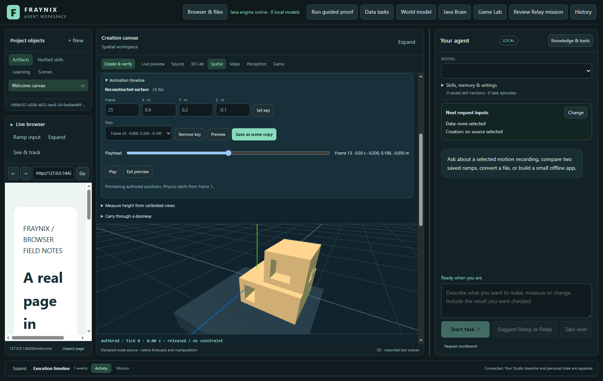
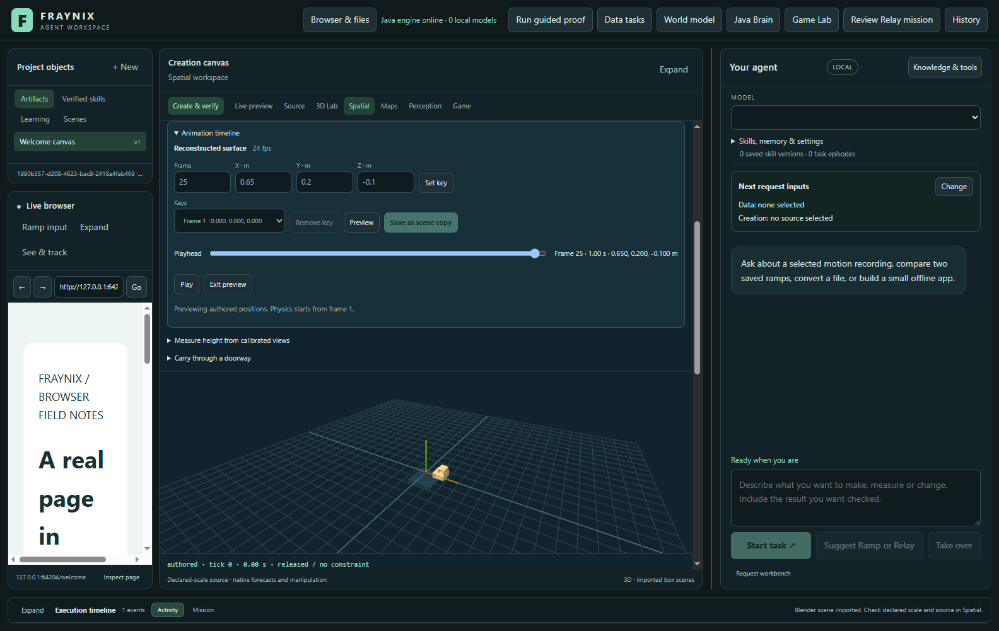

Edit a timeline and round-trip through Blender
Fraynix authors and plays prop translation locally. Native .blend exchange preserves the editable timeline, detailed mesh and separate collider.
Blender 4.5.17 LTS and 5.3.0 checked five positions and edited the final key by 250 mm. Fraynix reopened the motion with the same 1,376 triangles and collider properties.

Fraynix previews an authored move at frame 13

The Blender-edited end key is back in Fraynix
System files
Open source